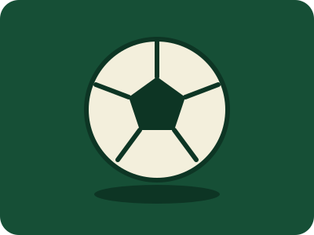
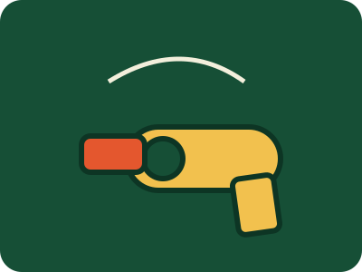
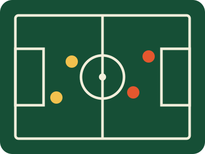
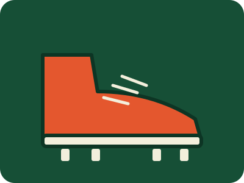
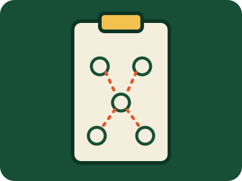

What
Soccer is a game of two teams, one ball, and ninety minutes of deciding where to run next. No hands, no timeouts, and very little room to hide a bad touch.

Drawn as an SVG by AI; the prompt is listed under AI Prompts.
I am involved in it three ways: I play it, I coach it, and I referee it. Each one shows me a different side of the same game.
Who
I am Taha Echekki. In my free time, I am very involved in the world of soccer. I play three to four days a week at the soccer fields here, and I work as a soccer coach for young kids, training at different schools each week. I am also a certified U.S. Soccer referee, and on weekends I referee youth and adult games. My favorite team that I have been supporting since I was 9 years old is Arsenal. They are the current defending champions of England and future champions of Europe.
Drawn as an SVG by AI; the prompt is listed under AI Prompts.
- Players, who decide the match with their feet.
- Coaches, who decide it with preparation.
- Referees, who keep it fair for both sides.
When
Soccer fits around a school schedule, so my week has a rhythm. Here is how the three roles line up.
| Role | When |
|---|---|
| Playing | Pickup games and weekends |
| Refereeing | Scheduled match days |
| Coaching | Starting in September |

Drawn as an SVG by AI; the prompt is listed under AI Prompts.
Where
A soccer game needs only a flat patch of grass and something to mark the goals. That is why it is played in almost every country on earth.

Drawn as an SVG by AI; the prompt is listed under AI Prompts.
- Full-size fields for league matches.
- Smaller fields for youth games and practice.
- Parks and open lawns for pickup games.
How
The basics are simple. The skill is in doing them well while a defender is chasing you.

Drawn as an SVG by AI; the prompt is listed under AI Prompts.
- Pass and receive with both feet.
- Move into space before the ball arrives.
- Defend as a group, not alone.
- As a referee, know the laws and stay close to the play.
Why
I like that soccer is simple to start and almost impossible to master. Playing keeps me moving, coaching teaches me to explain what I know, and refereeing teaches me to stay calm when everyone disagrees.

Drawn as an SVG by AI; the prompt is listed under AI Prompts.
Most of all, I like that anyone can join. A ball and a patch of grass are enough, and the same game that fills a stadium works in a park.
“If you do not believe you can do it, you have no chance at all.” — Arsène Wenger
AI Prompts
I used AI to help write the code and text of this page and to draw the images. The prompts are below.
I read and checked everything the AI produced before using it, and I can explain and change any part of this page.
- Build a one-page soccer hobby site with Who, What, When, Where, How, Why and AI Prompts sections, using embedded CSS and a script that shows one section at a time.
- Draw a flat cartoon SVG of a soccer ball on a green field.
- Draw a flat cartoon SVG of a gold trophy with a star.
- Draw a flat cartoon SVG of a referee whistle.
- Draw a flat cartoon SVG of a soccer pitch seen from above, with players.
- Draw a flat cartoon SVG of a red soccer boot.
- Draw a flat cartoon SVG of a coach's clipboard with a tactics diagram.